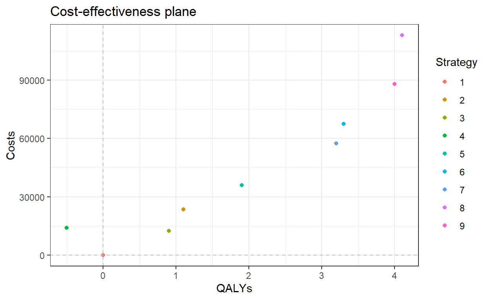
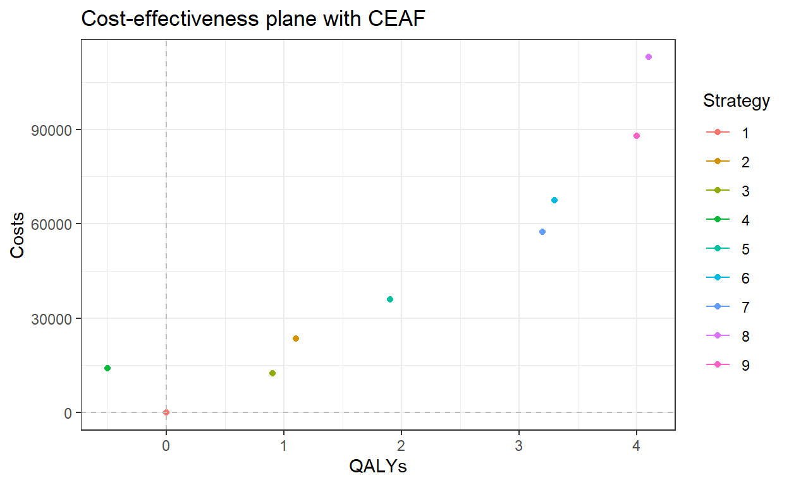

Cost-effectiveness acceptability frontier (CEAF)
Before starting
Watch the video explaining the cost-effectiveness acceptability frontier (to do so, you probably need to open open the tutorial in your browser using the ‘Open in Browser’ button on the upper left side of the screen.
Link to the video: https://vimeo.com/453418692/629173c450.
Read the article by M. Paulden: "Calculating and Interpreting ICERs and Net Benefits. Pharmacoeconomics 2020 Aug;38(8):785-807. Link: https://doi.org/10.1007/s40273-020-00914-6
Aims and instructions
This assignment aims to familiarise you with the concept of the cost-effectiveness acceptability frontier (CEAF), by constructing one yourself, based on a fictive example. The aim of this assignment is to identify which of the following screening strategy is the most cost effective.
OF NOTE: the solutions which are provided are one way to perform the calculations, you can obtain the same results using other fomula’s. The last ‘Hint’ is always the solution of the assignment. Soultions can be copy/paste in the chunk as shown in the . Once you have completed a code chunk, you can run it by pushing the ‘Run code’ button on the upper-right side of the chunk.


The data
The assignment uses the df_thx object, which is already loaded in this tutorial.
The df_thx object contains 4 variables and 9 observations (the outcomes of the strategies to compare):
- Strategy = the number identifying the screening strategy
- Name = the name of the screening strategy
- Costs = the total costs of the screening strategy
- QALYs = the total QALYs gained through the screening strategy
The df_thx object is displayed herebelow. Have a look at this data.frame and before starting the assignment.

Assignment and questions
Calculate the fully incremental ICERs of these screening strategies against each other and answer the questions below.
To do so, you can use a pen, paper, and calculator and use the method described in the paper from Paulden OR you can follow this tutorial. The answers to these questions are at the end of this tutorial.
1. Which strategies are dominated?
2. Which strategies are extendedly dominated?
3. Which strategies are on the cost-effectiveness acceptability frontier?
4. Which strategy is optimal if the WTP threshold is equal to €20,000/QALY?
5. Which strategy is optimal if the WTP threshold is equal to €40,000/QALY?
6. Which strategy is optimal if the WTP threshold is equal to €100,000/QALY?
7. At which WTP threshold would strategy 4 be the optimal strategy?
8. At which WTP threshold would strategy 7 be the optimal strategy?
9. Calculate the Net Monetary Benefit (NMB) for each strategy for a WTP threshold of €20,000/QALY. Which strategy has the highest NMB? Does this correspond with your answer to question 4?
Step 1: order the strategies by increasing total QALYs
df_thx <- df_thx[order(df_thx$QALYs),]
df_thxStep 2: identify the dominated strategies
Can you explain why this (these) strategy(ies) are dominated?
Explanation answer Step 2
Strategy 4 is dominated by Strategy 1 because Strategy 1 provides more health benefits (QALYs) at a lower costs.
Step 3: Calculate ICERs
Since strategy 4 is dominated, it will not be used further in the comparison of the strategies. It is now time to calculate the different ICERs.Calculate the ICERs of strategies 3, 2, 5, 7, 6, 9, 8. You can use a calculator or the R code chunk below to calculate them. Round your results to the closest euro and write your answers. Check your answers by clicking on ‘Continue’!
"Example: The ICER of strategy 3 is obtained by 1) calculating the difference in costs between strategy 3 and 1, 2) calculating the difference in QALYs between strategy 3 and 1, and 3) dividing the difference in costs by the difference in QALYs. Strategy 3 is compared with strategy 1 because strategy 1 is the first non-(extendedly) dominated strategy above 3."# EXAMPLE: ICER of 3 versus 1
diff_costs <- df_thx[which(df_thx$Strategy == 3), "Costs"] - df_thx[which(df_thx$Strategy == 1), "Costs"] # difference in costs between strategy 3 and 1
diff_effects <- df_thx[which(df_thx$Strategy == 3), "QALYs"] - df_thx[which(df_thx$Strategy == 1), "QALYs"] # difference in effects between strategy 3 and 1
icer <- diff_costs / diff_effects # ratio of the difference in costs by the difference in effect
icer_rounded <- round(icer) # rounding off
icer_rounded # shows resultsStep 3: Explanations
The results in the table below are obtained by calculating the difference in costs and effects between consecutive strategies in the table.Step 4: Identify extendedly dominated strategies
Based on the table above, we can now identify the extendedly dominated strategies!
Can you explain your answer?
Step 4: Explanations
Strategies 2 and 6 are extendedly dominated because their ICER is greater than the strategy below them in the table. Strategy 2 is extendedly dominated by strategies 3 and 5 because, in theory, it may possible to screen some individuals following strategy 3 and some other individuals following strategy 5, which would results in costs and benefits which dominate strategy 2 (the ICER of the combination of strategies 3 and 5 would be lower than the ICER of strategy 2). Thus strategy 2 is not extendedly dominated by a single strategy but by the combination of 3 and 5. The same applies to strategy 6, when considering strategy 7 and 9.
Step 5: Re-calculate ICERs and identify extendedly dominated strategies
Now, ICERs have to be recalculated since strategies 2 and 6 have been ruled out of the comparison. Calculate the ICERs of strategies 3, 5, 7, 9, 8. You can use a calculator or the R code chunk below to calculate them. Round your results to the closest euro and write your answers. Check your answers by clicking on ‘Continue’!# EXAMPLE: ICER of 3 versus 1
diff_costs <- df_thx[which(df_thx$Strategy == 3), "Costs"] - df_thx[which(df_thx$Strategy == 1), "Costs"] # difference in costs between strategy 3 and 1
diff_effects <- df_thx[which(df_thx$Strategy == 3), "QALYs"] - df_thx[which(df_thx$Strategy == 1), "QALYs"] # difference in effects between strategy 3 and 1
icer <- diff_costs / diff_effects # ratio of the difference in costs by the difference in effect
icer_rounded <- round(icer) # rounding off
icer_rounded # shows resultsStep 5: Explanations
The results in the table below are obtained by calculating the difference in costs and effects between consecutive strategies in the tableStep 5: Identify extendedly dominated strategies
Based on the table above, we can now identify the extendedly dominated strategies!
Step 6: Re-calculate ICERs and identify extendedly dominated strategies
Now, ICERs have to be recalculated since strategies 2, 5, and 6 have been ruled out of the comparison. Calculate the ICERs of strategies 3, 7, 9, 8. You can use a calculator or the R code chunk below to calculate them. Round your results to the closest euro and write your answers. Check your answers by clicking on ‘Continue’!# EXAMPLE: ICER of 3 versus 1
diff_costs <- df_thx[which(df_thx$Strategy == 3), "Costs"] - df_thx[which(df_thx$Strategy == 1), "Costs"] # difference in costs between strategy 3 and 1
diff_effects <- df_thx[which(df_thx$Strategy == 3), "QALYs"] - df_thx[which(df_thx$Strategy == 1), "QALYs"] # difference in effects between strategy 3 and 1
icer <- diff_costs / diff_effects # ratio of the difference in costs by the difference in effect
icer_rounded <- round(icer) # rounding off
icer_rounded # shows resultsStep 6: Explanations
The results in the table below are obtained by calculating the difference in costs and effects between consecutive strategies in the tableStep 6: Identify extendedly dominated strategies
Based on the table above, we can now identify the extendedly dominated strategies!
Quiz
The table and plot below provide the final results. Using these, please answer the questions below.## geom_path: Each group consists of only one observation. Do you need to adjust
## the group aesthetic?
Using Net Monetary Benefits
Calculate the Net Monetary Benefit (NMB) for each intervention for a WTP threshold of €20,000/QALY. Store the NMBs in a column called NMB in the df_thx dataframe.
"The NMB of each strategy is calculated by multiplying the number of QALY of each intervention by the WTP threshold and then substracting the costs of each intervention."df_thx$NMB <- df_thx$QALYs * 20000 - df_thx$Costs
df_thx # shows resultsUsing Net Monetary Benefits - question
The table below shows the correct results. You can use it to check your answer.
Try again!
Determine which strategies are on the CEAF and calculate the ICERs for the strategies in the following table. Use a pen, paper, and calculator or the R code chunck belo to perform the calculations.
Try again! - Results
This table shows the correct results.